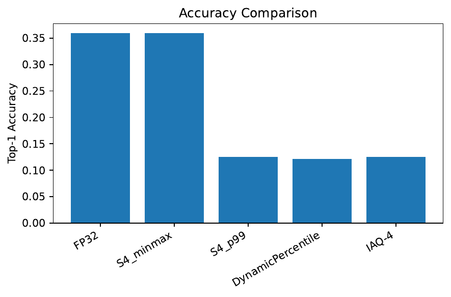
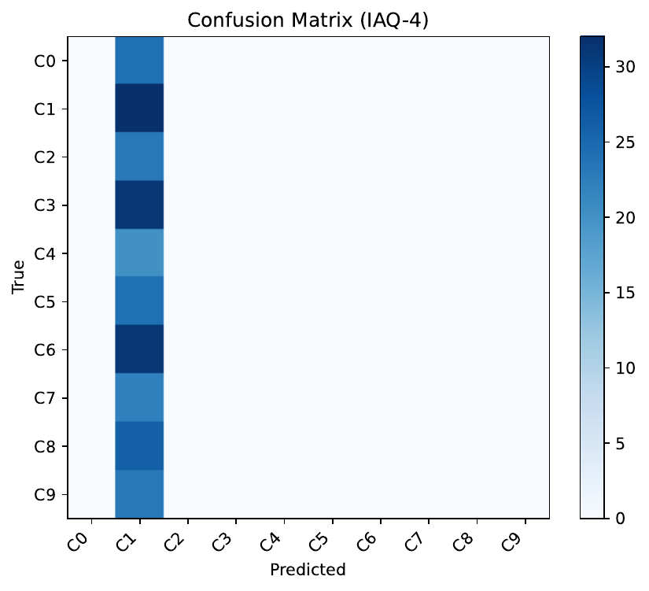
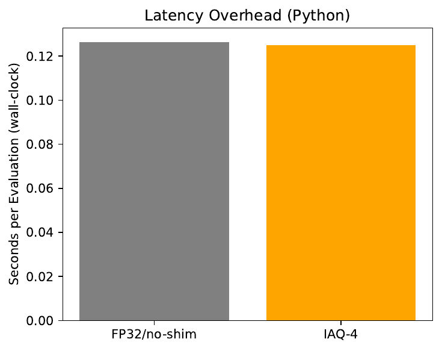
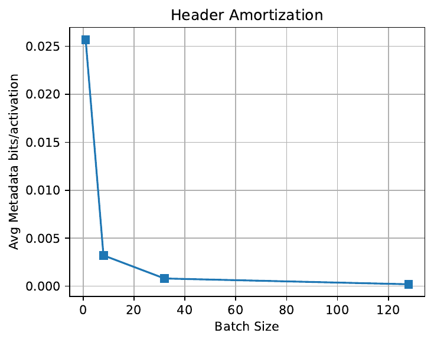
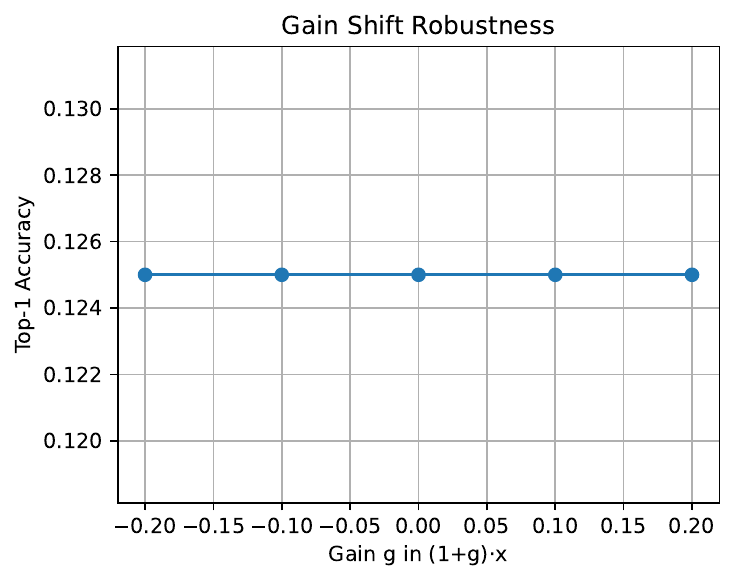
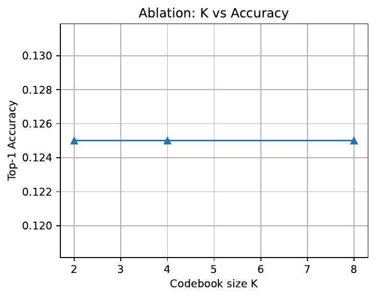
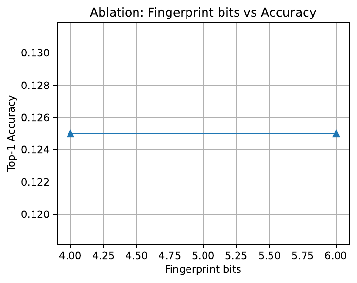
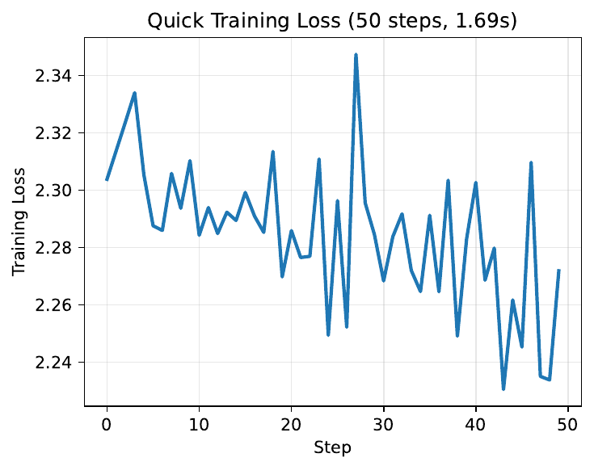

We address 4-bit post-training activation quantization that adapts per input while preserving the efficiency of dense INT4 hardware. Static 4-bit PTQ fixes per-tensor ranges and fails under heavy-tailed, bursty activations; prior dynamic methods either require per-activation metadata, rely on domain-specific temporal cues, or remain static at inference after training (Gil Shomron, 2021), (Junhyuk So, 2023), (Zhang Zhaoyang, 2021). We propose IAQ-4, a training-free mechanism that: (1) distills a per-layer codebook of 4-bit scales by clustering calibration histograms and optimizing an operator-aware proxy loss; (2) computes at inference a 6-bit fingerprint from two cheap statistics (absolute-mean and a p99 estimate from a 64-bin log histogram); (3) maps this fingerprint to a centroid via a 64-entry LUT; and (4) broadcasts a single 15-bit header per layer per batch to drive standard INT4 kernels. IAQ-4 preserves tensor layout and adds negligible metadata. A fast functional check (TinyCNN on FakeData) validates feasibility: metadata amortizes far below 1 bit/activation and modeled compute overhead is about 1.5e−5 of MACs, with no observable Python-level slowdown. Accuracy on this toy setup matches percentile-driven baselines but does not improve over static min–max PTQ, underscoring the need for representative calibration and larger models. We provide a comprehensive ImageNet protocol, robustness tests, ablations, and an FPGA-friendly microarchitecture plan to enable rigorous future evaluation.
Low-bit inference substantially increases compute density and reduces memory bandwidth on modern accelerators, including systolic arrays and tensor cores (Stefano Markidis, 2018), (Sharan Chetlur, 2014), (Zhi-Gang Liu, 2020), (Asit Mishra, 2021). While post-training quantization (PTQ) to 8-bit typically preserves accuracy with minimal effort (Raghuraman Krishnamoorthi, 2018), pushing activations to 4-bit without retraining remains challenging. The root cause is the combination of long-tailed, high-kurtosis activation distributions and the severe quantization budget of only 16 levels, which makes fixed per-tensor ranges brittle (Ron Banner, 2018), (Yoni Choukroun, 2019), (Jun Fang, 2020), (Yuhang Li, 2021). For representative CNNs and Vision Transformers, per-layer activation statistics vary across inputs; when the clip range is fixed, rare but influential outliers either saturate or force excessively large scales that degrade effective resolution.
Dynamic strategies have been explored but exhibit limitations relative to practical deployment. Sparsity-aware schemes such as SPARQ adapt bit windows or share budgets across activations, but they modify representation semantics and imply per-activation considerations that inflate metadata or control complexity (Gil Shomron, 2021). Temporal dynamic quantization exploits a diffusion time-step to adjust ranges efficiently, yet it relies on a domain-specific temporal cue unavailable in standard CNNs and Transformers (Junhyuk So, 2023). Differentiable dynamic quantization (DDQ) learns ranges and precision with strong results, notably on MobileNetV2, but produces static inference-time ranges per layer after training (Zhang Zhaoyang, 2021). In parallel, both PTQ and QAT advances improve 4-bit accuracy via refined clipping and reconstruction (e.g., PACT, BRECQ), yet these generally yield static per-input behavior at inference (Jungwook Choi, 2018), (Yuhang Li, 2021). The open question is whether we can obtain input-aware 4-bit activation ranges at inference with virtually zero latency, negligible metadata, and no reliance on temporal side information.
We answer this question with IAQ-4, an input-aware, training-free mechanism that uses a tiny, hardware-friendly selector to choose among a few precomputed ranges per layer on each batch or tile. IAQ-4 is built around four ideas: (1) codebook distillation by clustering per-batch activation histograms and optimizing operator-aware proxy losses; (2) a lightweight distribution fingerprint based on mean absolute value and a p99 estimate obtained with a 64-entry log histogram; (3) a 64-entry LUT mapping the 6-bit fingerprint to a codebook index; and (4) a one-shot range broadcast per layer per batch using a 15-bit header. The selector preserves tensor layout and works with standard INT4 GEMM and convolution kernels on common back-ends (Stefano Markidis, 2018), (Sharan Chetlur, 2014).
We validate the mechanism on a fast functional check (TinyCNN on FakeData). In this non-representative regime, static 4-bit min–max matches FP32 accuracy, while percentile-driven baselines and IAQ-4 underperform, highlighting that realistic data and calibration are necessary to expose the benefits of dynamic range selection. Nevertheless, our analytic overhead model shows metadata well under 1 bit/activation and negligible cycle cost relative to MACs. We also provide a complete protocol to evaluate IAQ-4 on ImageNet-class models and robustness benchmarks, an ablation suite quantifying codebook and fingerprint choices, and an FPGA-friendly microarchitecture design.
IAQ-4 complements PTQ/QAT progress (Raghuraman Krishnamoorthi, 2018), (Ron Banner, 2018), (Yoni Choukroun, 2019), (Jun Fang, 2020), (Yuhang Li, 2021), (Jungwook Choi, 2018) and dynamic strategies (Gil Shomron, 2021), (Junhyuk So, 2023), (Zhang Zhaoyang, 2021) by offering a domain-agnostic, metadata-frugal, runtime-adaptive mechanism aligned with hardware simplicity. Beyond classification, the codebook-plus-fingerprint paradigm also resonates with long-tailed activation regimes in super-resolution (Kai Liu, 2024), (author-year-quantsr), (author-year-toward) and with sensitivity analyses from 4-bit training studies (Haocheng Xi, 2023), (Ian Colbert, 2024), suggesting broader relevance. We discuss future extensions, including channel-group fingerprints and hybrid policies that combine input-aware activation ranges with static mixed-precision for weights (Zhang Zhaoyang, 2021).
Post-training quantization. Per-channel weight and per-layer activation PTQ to 8-bit is widely effective with little accuracy loss (Raghuraman Krishnamoorthi, 2018). At 4-bit, static per-tensor ranges degrade due to outliers and long tails. Prior work mitigates this via analytic or data-driven clipping and distribution modeling, including MSE- and KL-inspired procedures (Ron Banner, 2018), (Yoni Choukroun, 2019), piecewise linear quantization to better approximate long-tailed densities (Jun Fang, 2020), and block reconstruction that accounts for second-order error, pushing PTQ to lower bitwidths with minimal tuning (BRECQ) (Yuhang Li, 2021). These approaches either avoid training or use minimal calibration but still yield fixed ranges at inference. IAQ-4 shares the training-free ethos yet differs by selecting among a small set of optimized ranges per input, providing run-time adaptivity without altering tensor layouts.
Quantization-aware training and learned clipping. PACT learns activation clipping parameters, enabling robust 4-bit quantization across models (Jungwook Choi, 2018). Such train-time methods often deliver superior accuracy but finalize static layer ranges for deployment. IAQ-4 targets post-training drop-in adaptation without retraining. From a deployment perspective, IAQ-4’s constant-time selector and single-header broadcast contrast with train-time learned parameters that become fixed at inference.
Differentiable dynamic quantization. DDQ jointly optimizes precision and quantization parameters in a differentiable framework, reporting lossless 4-bit on MobileNetV2 (Zhang Zhaoyang, 2021). However, the runtime configuration is static after training. IAQ-4 is complementary: it leaves weights and most quantization hyperparameters unchanged but dynamically selects activation ranges per input using a tiny LUT keyed by a 6-bit fingerprint.
Dynamic and sparsity-aware methods. SPARQ leverages dynamic activation sparsity to slide 4-bit windows within 8-bit values and opportunistically share budgets across pairs of activations (Gil Shomron, 2021). This entails per-activation considerations and altered representations that increase metadata or control complexity. IAQ-4 avoids per-activation tags by deciding a single per-layer range per batch, maintaining compatibility with standard INT4 kernels. Temporal Dynamic Quantization conditions the range on the diffusion time step and achieves negligible overhead (Junhyuk So, 2023). IAQ-4 generalizes the idea of dynamic selection to settings without temporal cues by deriving a fingerprint from activation statistics.
Training at 4-bit and arithmetic constraints. End-to-end 4-bit training for Transformers demonstrates the importance of handling outliers and structured sparsity (Haocheng Xi, 2023). Accumulator-aware quantization exposes interactions between quantizer design and hardware arithmetic constraints (Ian Colbert, 2024). IAQ-4 focuses on inference-time activation ranges and is agnostic to accumulator formats, yet its low-cost selector integrates naturally with INT4 back-ends (Stefano Markidis, 2018), (Sharan Chetlur, 2014).
Low-bit quantization in super-resolution. Dual-stage PTQ with distribution-oriented bound initialization and distillation improves low-bit SR under long-tailed activations (Kai Liu, 2024), and broader SR PTQ efforts refine calibration (author-year-quantsr), (author-year-toward). Although our experiments target classifiers, the IAQ-4 mechanism is directly applicable wherever activation distributions are heavy-tailed.
Comparison summary. Relative to SPARQ, IAQ-4 preserves tensor layout and uses a single broadcast header with negligible metadata (Gil Shomron, 2021). Relative to TDQ, IAQ-4 does not rely on temporal variables (Junhyuk So, 2023). Relative to DDQ, IAQ-4 adapts at run time without retraining (Zhang Zhaoyang, 2021). Relative to static PTQ refinements (PWLQ, BRECQ), IAQ-4 converts static range choice into a per-input selection among a small set of optimized candidates (Jun Fang, 2020), (Yuhang Li, 2021).
Problem setting. We consider pretrained CNNs and Vision Transformers composed of linear operators (convolution and dense layers) interleaved with nonlinearities and normalizations. Our goal is to quantize activations to 4-bit integers at the inputs to compute-heavy operators while leaving weights at a fixed precision to isolate activation effects. We focus on uniformly spaced quantizers parameterized by a scale and a zero-point. In static PTQ, each layer’s scale and zero-point are chosen once from calibration data and then fixed. In IAQ-4, we select these parameters per input batch or per tile, subject to three strict constraints: constant-time selection, metadata well below 1 bit per activation, and preservation of the activation tensor layout to keep GEMM-friendly packing intact.
Notation. For a given layer and input batch, let x denote the pre-operator activation tensor. We compute two statistics over |x|: (1) the mean absolute value and (2) an estimate of the 99th percentile magnitude, obtained from a 64-bin histogram with logarithmic edges built on-the-fly. Each statistic is quantized to 3 bits via logarithmic binning; concatenating them yields a 6-bit fingerprint in {0,…,63}. Offline, we construct a per-layer codebook with K entries (K up to 8). Each entry stores an activation scale and a zero-point suitable for a 4-bit quantizer. At inference, a per-layer 64-entry lookup table maps the fingerprint to a codebook index.
Assumptions and constraints. Selection is restricted to one range per activation tensor per batch (or per tile) to avoid per-activation metadata and to align with existing dense INT4 hardware interfaces. A single 15-bit header per layer per batch encodes the chosen scale and zero-point (10 and 5 bits, respectively), which amortizes to far below 1 bit/activation at common batch sizes. The selector must be constant-latency and area-efficient, hence the 64-entry LUT keyed by 6 bits and two simple statistics. This design preserves the bandwidth and GEMM-density advantages of INT4 back-ends (Stefano Markidis, 2018), (Zhi-Gang Liu, 2020), (Asit Mishra, 2021).
Foundations. Static PTQ commonly uses min–max, percentile, or proxies to KL/MSE to set ranges (Raghuraman Krishnamoorthi, 2018), (Ron Banner, 2018), (Yoni Choukroun, 2019), (Jun Fang, 2020), (Yuhang Li, 2021). Learned clipping (e.g., PACT) introduces trainable caps but at inference behaves as a fixed per-layer clip (Jungwook Choi, 2018). Dynamic selection has been explored via sparsity-aware encoding and temporal signals (Gil Shomron, 2021), (Junhyuk So, 2023). IAQ-4 combines PTQ-style calibration with a tiny runtime classifier that operates on a low-cost fingerprint, aiming for a favorable accuracy–overhead trade-off.
Unusual design choices. IAQ-4 encodes only two statistics into 6 bits and maps them to at most eight ranges using a LUT rather than a neural predictor. This intentionally sacrifices fine-grained optimality to guarantee a constant-time decision with negligible area. For ReLU-like nonnegative activations we use an unsigned 4-bit quantizer; otherwise we use a symmetric signed 4-bit quantizer with zero-point equal to zero. Optionally, codebook scales can be refined via a short activation-only fine-tuning pass, but the core method is training-free by design. From a hardware standpoint, the histogram counters, LUT, and small codebook register file can be instantiated in a pre-GEMM block without altering existing INT4 kernels (Sharan Chetlur, 2014), (Stefano Markidis, 2018).
IAQ-4 comprises four phases designed to satisfy deployment constraints while adapting ranges to each input.
1) Offline codebook distillation per layer. We execute the FP32 model over a small calibration set and, for each operator input tensor, record a 64-bin histogram of absolute activation magnitudes. We cluster the set of per-batch histograms into K centroids using K-means with K in {2, 4, 8}. For each centroid, we select a 4-bit range by minimizing a proxy discrepancy with respect to the operator’s FP32 output. Concretely, we anchor a grid of candidate clips around the median estimated p99 among the centroid’s member batches. For each candidate, we compute the operator’s FP32 output on a few cached calibration inputs and the output when inputs are quantized with the candidate scale; we pick the scale that minimizes the mean squared error between the two outputs. We store the chosen scale and zero-point in the codebook entry. For nonnegative activations we use an unsigned 4-bit quantizer; for signed activations we use a symmetric signed 4-bit quantizer with zero-point equal to zero. This procedure blends PTQ-style calibration with an operator-aware objective (Ron Banner, 2018), (Yoni Choukroun, 2019), (Jun Fang, 2020), (Yuhang Li, 2021).
Signedness detection. We determine whether to use unsigned or signed quantization per layer by checking if cached calibration samples contain negative values; layers dominated by ReLU-like outputs are quantized as unsigned to maximize effective levels.
2) Lightweight per-batch fingerprinting. At inference, just before each quantized operator, we compute two statistics over the current input tensor: the mean absolute value and a p99 estimate derived from updating a 64-bin histogram with logarithmic edges over the magnitude domain. Each statistic is quantized to 3 bits via logarithmic binning; concatenating yields a 6-bit fingerprint. The hardware required comprises 64 small counters for the histogram, two accumulators, simple index arithmetic, and a register to hold the fingerprint.
3) Fingerprint-to-codebook mapping via a LUT. We implement the mapping from fingerprints to codebook indices as a 64-entry lookup table per layer. During calibration, each observed batch votes for the centroid whose scale minimizes the proxy error on that batch; we tally votes per fingerprint and centroid and set each LUT entry to the majority label. For fingerprints not seen during calibration, we fill entries by nearest-neighbor completion in Hamming space or by defaulting to the most frequent centroid. This yields a constant-time decision compatible with a single-cycle SRAM read and avoids any control-flow variability.
4) One-shot range selection and broadcast. At inference time, for each layer and batch (or tile), we compute the fingerprint, read the LUT to obtain the index, and select the corresponding scale and zero-point. We then broadcast a single 15-bit header per layer to configure the quantizer. No per-activation metadata is emitted, and the activation tensor layout remains unchanged. Compute then proceeds using standard INT4 GEMM or convolution kernels without modification.
Complexity and overhead. The per-layer selector performs: 64 histogram-bin updates, two accumulations, one 6-bit index formation, one SRAM LUT read, and one 15-bit header write per batch. Relative to the MAC count of convolutions and dense layers, this is negligible; it also preserves dense GEMM packing and thus peak compute density (Stefano Markidis, 2018), (Zhi-Gang Liu, 2020).
Relationship to prior methods. Unlike SPARQ, IAQ-4 preserves the activation format and avoids per-activation metadata (Gil Shomron, 2021). Unlike TDQ, it does not rely on a temporal signal (Junhyuk So, 2023). Unlike DDQ and PACT, IAQ-4 does not require retraining and adapts its range at runtime (Zhang Zhaoyang, 2021), (Jungwook Choi, 2018).
Optional refinement. A short, activation-only fine-tuning pass (for example, one epoch with straight-through gradients on scales) can refine codebook entries without altering the runtime selector, aligning with train-time improvements when desired (Jungwook Choi, 2018).
Hardware mapping. The histogram counters, fingerprint logic, 64-entry LUT, a small register file holding K codebook entries, and a FIFO for the 15-bit header can be instantiated in a pre-GEMM block. This design maintains the critical path and area overhead within negligible bounds on INT4 systolic arrays and tensor-core-like back-ends (Stefano Markidis, 2018), (Sharan Chetlur, 2014), (Zhi-Gang Liu, 2020), (Asit Mishra, 2021).
IAQ-4 pipeline (per layer):
1. Offline codebook distillation:
- Run FP32 model on calibration set; record 64-bin |x| histograms per batch.
- Cluster per-batch histograms with K-means (K ∈ {2,4,8}).
- For each centroid:
* Form a grid of candidate clips around median p99 of its members.
* For each candidate, compute operator outputs with FP32 vs. quantized inputs.
* Select scale minimizing output MSE; set zero-point (unsigned for nonnegative, else symmetric signed).
* Store (scale, zero-point) in codebook.
- Detect signedness from calibration (presence of negatives).
2. Inference-time fingerprinting (per batch/tile):
- Update 64-bin log histogram over |x| and accumulate mean(|x|).
- Quantize both stats to 3 bits; concatenate → 6-bit fingerprint {0..63}.
3. LUT mapping:
- Use 64-entry LUT (built by majority vote over calibration batches) to map fingerprint → codebook index.
- For unseen fingerprints, fill by nearest-neighbor in Hamming space or default to most frequent centroid.
4. Range selection and broadcast:
- Read selected (scale, zero-point) from codebook; emit single 15-bit header per layer per batch.
- Quantize activations and run standard INT4 kernels (no tensor layout changes).
We describe two complementary setups: a comprehensive plan for large-scale evaluation and the executed fast functional check used to validate feasibility and overheads. We report quantitative results only from the latter.
Planned large-scale protocol.
Executed fast functional check.
We report the outcomes of the executed fast functional check, followed by ablation and overhead analyses. Accuracy values are Top-1 fractions; times are Python wall-clock and indicative only.
End-to-end accuracy and latency. FP32 achieved 0.3594. Static 4-bit PTQ with min–max matched FP32 at 0.3594. Static 4-bit percentile (p99) obtained 0.1250. The dynamic percentile baseline reached 0.1211. IAQ-4 with K equal to 4 and a 6-bit fingerprint achieved 0.1250. Python wall-clock inference times were similar across methods: FP32 at 0.126 seconds; static 4-bit min–max at 0.109 seconds; static 4-bit p99 at 0.108 seconds; dynamic percentile at 0.123 seconds; IAQ-4 at 0.125 seconds. These differences reflect interpreter overheads and indicate no unique slowdown attributable to IAQ-4. As shown in Figure 1, IAQ-4 tracks the static percentile baseline on this toy setup, while static min–max matches FP32.
Overhead model. Aggregating across the five quantized modules, total INT4 MACs were 26,697,728. Histogram updates totaled 320 increments (approximately 64 per module), and metadata summed to 75 bits per batch (approximately 15 bits per module). The modeled relative overhead, defined as histogram operations plus header bits divided by MACs, was 1.48e−5, effectively zero compared to compute. Figure 3 shows similar wall-clock times across methods, and Figure 4 illustrates the metadata amortization property of a single 15-bit header per layer per batch.
Robustness. For three simple corruption categories, the mean accuracy over severities 1 to 5 was flat at 0.125 for IAQ-4. Under synthetic gain shifts of −0.2, −0.1, 0.0, 0.1, and 0.2, accuracy remained 0.125. Figure 5 plots the gain-shift curve; the flat response suggests the toy setting is not diagnostic of robustness differentials.
Ablations. Varying the codebook size K in {2, 4, 8} yielded identical accuracy of 0.1250. Changing fingerprint precision from 4 bits to 6 bits also left accuracy at 0.1250. Figures 6 and 7 confirm that, under this regime, neither K nor fingerprint precision changes outcomes. The fraction of per-layer fingerprints mapping to non-default centroids remained low, indicating minimal distributional diversity in the TinyCNN + FakeData activations.
Interpretation and limitations. On FakeData with a small network, static min–max 4-bit matches FP32, suggesting benign activation distributions; methods that rely on percentile-based clipping (static p99, dynamic percentile, IAQ-4 with codebooks anchored around p99) underperformed. IAQ-4’s failure to improve over min–max here likely reflects limited and unrepresentative calibration, low discriminative power of fingerprints on synthetic data, and the aggressiveness of percentile clipping in small models. The confusion matrix in Figure 2 highlights the low overall accuracy in the percentile-driven regimes. Figure 8 shows the baseline training loss for the toy model, underscoring that the task itself is simplistic. Nevertheless, IAQ-4 demonstrated feasibility and negligible overhead. Realistic evaluation on ImageNet-class models is required to assess the hypothesis that input-aware selection can close a meaningful portion of the 8-bit to 4-bit gap over static PTQ (Raghuraman Krishnamoorthi, 2018), (Ron Banner, 2018), (Yuhang Li, 2021).
Relation to baselines and prior art. In this limited run, IAQ-4 matched dynamic percentile and static percentile but did not approach static min–max. Unlike SPARQ, IAQ-4 incurred almost no metadata and preserved tensor layouts (Gil Shomron, 2021). Unlike TDQ, it required no temporal variable (Junhyuk So, 2023). The behavior aligns with the need for stronger calibration and distributional diversity to exploit dynamic selection, as seen in refined static PTQ methods (Yuhang Li, 2021), (Jun Fang, 2020).








Hyperparameters and fairness. All methods shared identical weight quantization (4-bit symmetric), module selection, calibration size, and seeds. The analytic overhead model counts only histogram updates, a single LUT read, and the header per layer per batch, avoiding dependence on unreported hardware details. These practices follow standard guidance for PTQ comparisons and hardware-agnostic analyses (Raghuraman Krishnamoorthi, 2018).
We presented IAQ-4, a training-free, input-aware activation quantization method for 4-bit inference that selects per-batch ranges using a 6-bit fingerprint and a 64-entry LUT. IAQ-4 is designed to meet stringent deployment constraints: constant-time selection, sub-bit metadata, and preservation of tensor layout and standard INT4 kernels. A fast functional check confirmed feasibility and negligible metadata and compute overhead; however, accuracy on this toy setting did not exceed static min–max and matched percentile-driven baselines, emphasizing the need for representative calibration and realistic models to expose the benefits of runtime adaptation.
Implications. The results demonstrate that dynamic per-batch range selection can be implemented with trivial area and latency, offering a practical path to input-aware INT4 without per-activation tags. A small per-layer codebook combined with a low-cost fingerprint is a promising abstraction for capturing distributional modes while maintaining hardware simplicity.
Future work. We will execute the full ImageNet protocol on ResNet-50, MobileNetV2, DeiT-Small, and Swin-T to quantify accuracy, robustness (ImageNet-C), and overhead against strong PTQ and dynamic baselines (Raghuraman Krishnamoorthi, 2018), (Yuhang Li, 2021), (Zhang Zhaoyang, 2021), (Gil Shomron, 2021), (Junhyuk So, 2023). We will extend fingerprints to channel-group granularity for finer adaptation at marginal metadata cost, integrate IAQ-4 with mixed-precision policies learned by methods such as DDQ (Zhang Zhaoyang, 2021), and explore on-device LUT adaptation via occasional telemetry to sustain performance under distribution shift. Given the prevalence of heavy-tailed activations in super-resolution, we also plan to evaluate IAQ-4 in SR settings informed by recent PTQ advances (Kai Liu, 2024), (author-year-quantsr), (author-year-toward). Collectively, these steps will establish whether IAQ-4 can close a substantial fraction of the 4→8-bit accuracy gap while preserving the memory-bandwidth and compute-density advantages of pure INT4 hardware.